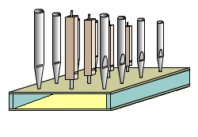
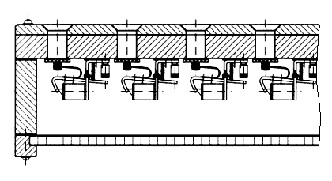
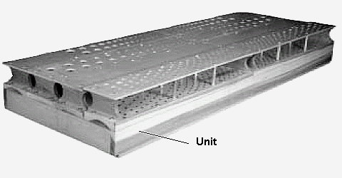
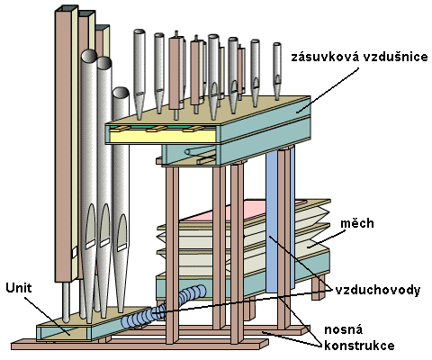

U skříňové vzdušnice (anglicky Unit) stojí všechny píšťaly na společném vzduchovém prostoru (vzduchojemu – ventilové komoře). Vnitřek vzdušnice tedy není rozdělen na kancely ani v příčném, ani v podélném směru: |

Každá píšťala má svůj ventil (tato vzdušnice dnes používá téměř výhradně elektromagnetické ventily, lze však postavit i mechanický či pneumatický Unit). O rozhodování, která píšťala zazní - splnění podmínky zvuk = (tón) AND (rejstřík) se stará sama traktura, příslušná logika je tedy mimo vzdušnici (přímo v traktuře - viz schéma elektrické traktury systému "UNIT" v kapitole o elektrických spojkách). V cestě vzduchu ze vzduchojemu k píšťale stojí jen ventil (u ostatních vzdušnic je to dvojice "ventilů" různé konstrukce z tónového a registračního aparátu), jeho cesta je tak velmi krátká a nemá vliv na zhoršování jeho vlastností. |

Konstrukčně se jedná o nejjednodušší typ vzdušnice - jak je patrné z předchozího výkresu řezu, celou vzdušnici tvoří jen plochá skříň (v podstatě "krabice"), jejíž víko je současně ventilovou deskou (zespodu jsou přímo připevněny ventily) a píšťalnicí (shora na ní stojí píšťaly). Ventily jsou současně jedinými pohyblivými součástkami, mechanismus ovládání přívodu vzduchu k píšťalám je tak velmi jednoduchý. Počet konstrukčních dílů je oproti jiným vzdušnicím až několikanásobně nižší, což se odráží nejen v ceně, ale také v mírně vyšší spolehlivosti (odolnosti např. proti nepříznivým vlivům změn vlhkosti a teploty apod. a menšími nároky na použité materiály a technologie výroby komponentů). Píšťaly na skříňové vzdušnici nemusí být uspořádány v řadách za sebou a vedle sebe tak, jak to u ostatních vzdušnic diktuje průběh kancel a dalších mechanismů (např. zásuvek), ale jejich uspořádání může být přizpůsobeno tvaru skříně či prostoru, ve kterém stojí nástroj. Můžeme se tak setkat se skříňovou vzdušnicí ve tvaru obdélníku či čtverce, ale také s řešením s píšťalami v jedné či několika málo dlouhých řadách (vzdušnice pak připomíná jednu dlouhou tónovou kancelu).
|
Skříňová vzdušnice je základem tzv. multiplexních varhan, které důsledným použitím transmisí a extenzí (viz popis spojek v úvodní kapitole o trakturách a popis multiplexních varhan) používají tytéž píšťaly vícenásobně pro několik rejstříků. Řadíme je tedy mezi tzv. úsporné konstrukce. Úspory mohou jít dokonce tak daleko, že se na jediné vzdušnici stavěly i několikamanuálové nástroje. Zvuk takového nástroje je však díky vícenásobnému použití píšťal částečně ochuzený a taky ladění dosti problematické (alikvotní tóny jsou laděny temperovaně, jednotlivé rejstříky se liší jen polohou, ne intonací apod.). Multiplexní varhany byly oblíbené do cca první poloviny minulého století a především v Americe (většina "Theatre" či "Cinema - organ" varhany v kinosálech, divadlech a kabaretech), dnes se pro velmi nevýhodné estetické (zvukové) vlastnosti staví jen ojediněle (většinou ne jako samostatný nástroj ale jako rozšíření nějakého starého nástroje o další rejstříky či manuál). Pokud se ale jedná o nově stavěný nástroj v americkém regionu, zákazníkem je využití Unit vzdušnice a zařazení alespoň části multiplexních rejstříků stále vyžadováno. Nevýhodné zvukové vlastnosti se kompenzují přidáním samostatné Mixtury (jako další řady píšťal), vzdušnice pak může vypadat např. takto: |

Další využití skříňové vzdušnice je v úsporných a
smíšených konstrukcích. Nemusí se vždy jednat jen o úsporu materiálu pomocí
multiplexování (vícenásobného využití píšťal), někdy je použití této vzdušnice
výhodné i z důvodu prostorové (výškové) úspory: |

Na obrázku je zachyceno vnitřní uspořádání části varhan s klasickou zásuvkovou vzdušnicí. Tato vzdušnice je pomocí nosné konstrukce umístěna v nástroji v určité výšce (zpravidla okolo dvou metrů nad podlahou), pod ní je měch či měchy, vzduchovody a traktura (ta není na obrázku zachycena). Na vzdušnici stojí píšťaly, jejich délka tak určuje celkovou výšku nástroje. Mají-li varhany otevřený šestnáctistopý rejstřík (např. Principal 16'), jeho nejdelší píšťaly jsou dlouhé přibližně 5,5 m, pro nástroj bychom tak potřebovali prostor vysoký minimálně 7 až 8 m, jinak by bylo nutné nejdelší píšťaly krepovat (zahnout). Tyto píšťaly by mnohdy převyšovaly prospekt a působily tak rušivě při pohledu na nástroj zepředu, zabíraly by na vzdušnici příliš mnoho místa a navíc by svou hmotností značně namáhaly nosnou konstrukci. Je proto výhodnější nestavět prvních několik největších píšťal mezi ostatní přímo na vzdušnici, ale umístit je níže v zadní části nástroje. Pak je k nim nutné přivést ze vzdušnice vzduch pomocí konduktů, což naráží na určité problémy - velká píšťala potřebuje mnoho vzduchu, z toho vyplývá nutnost velkého tónového ventilu a vzduch při cestě dlouhým konduktem ztrácí své vlastnosti a způsobuje problémy při nasazení tónu. Proto je výhodnější postavit tyto píšťaly na samostatnou vzdušnici, otázkou zůstává, jak k této vzdušnici přivést ovládání (trakturu). Mají-li varhany mechanickou trakturu, bylo by její "protažení" až k této vzdušnici komplikované (i když i takové řešení se používá). Výhodnější je řešit tuto vzdušnici jako skříňovou (Unit) s elektromagnetickými ventily a jejich otevírání svázat "elektricky" s otevíráním ventilu příslušného tónu a rejstříku v "hlavní" vzdušnici varhan. Lze k tomu použít komponenty pro převod pohybu na elektrické signály (jsou popsány v kapitole komponenty smíšené traktury). U pneumatické traktury lze použít pneumatické ventily a ke vzdušničce jen protáhnout rourky příslušných tónů od hlavní vzdušnice. U varhan s elektrickou trakturou je řešení nejjednodušší, přivedou se jen příslušné elektrické signály. Obdobně se skříňové vzdušnice využívá i u prospektových píšťal, ke kterým by jinak vzduch musel být přiveden z hlavní vzdušnice pomocí dlouhých konduktů. Použije se samostatná Unit vzdušnice (prakticky rejstříková kancela s ventily pro každou píšťalu), umístěná přímo v prospektu pod píšťalami nebo v jejich bezprostřední blízkosti (nazývá se rovněž "prospektová vzdušnice " nebo "vzdušnice vyvedených píšťal"). Této vzdušnice lze pak využít pro multiplexování ("vytáhnout" z prospektové řady dva či více rejstříků, např. Principál a Oktávu) i v případě, kdy je zbytek varhan vystavěn "klasicky". Rozmístění píšťal v prospektu navíc nemusí sledovat rozmístění píšťal na dalších vzdušnicích (např. z výtvarných důvodů u architektonicky nestandardních prospektů), varhanář nemusí řešit "křížení" rozvodu vzduchu k těmto píšťalám, rozvede jen signály k ventilům. |
Na souvisejících stránkách najdete popis multiplexních varhan se skříňovou vzdušnicí a základních konstrukčních variant vzdušnic s tónovými kancelami - zásuvkové vzdušnice, ventilové vzdušnice, pružinové vzdušnice a vzdušnic s rejstříkovými kancelami - kuželkové vzdušnice, membránové vzdušnice a vzdušnice se svislými ventily. |
Poznámka: Tato stránka je součástí Anatomie varhan ®, © Ing. Petr Bernat.